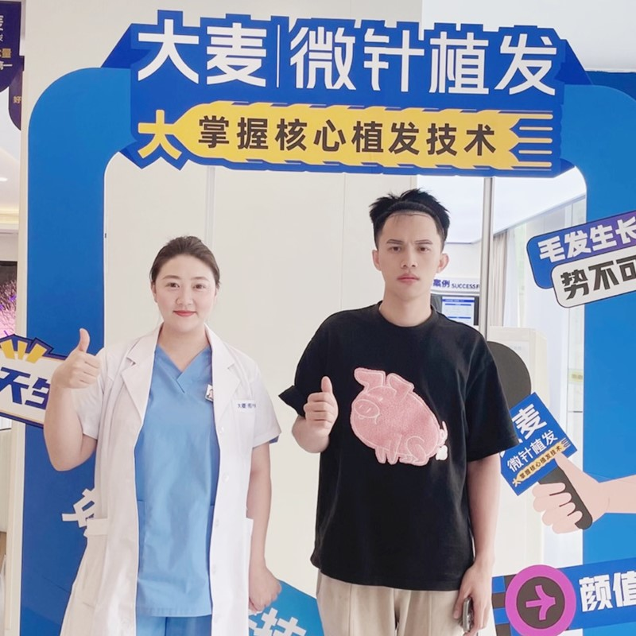
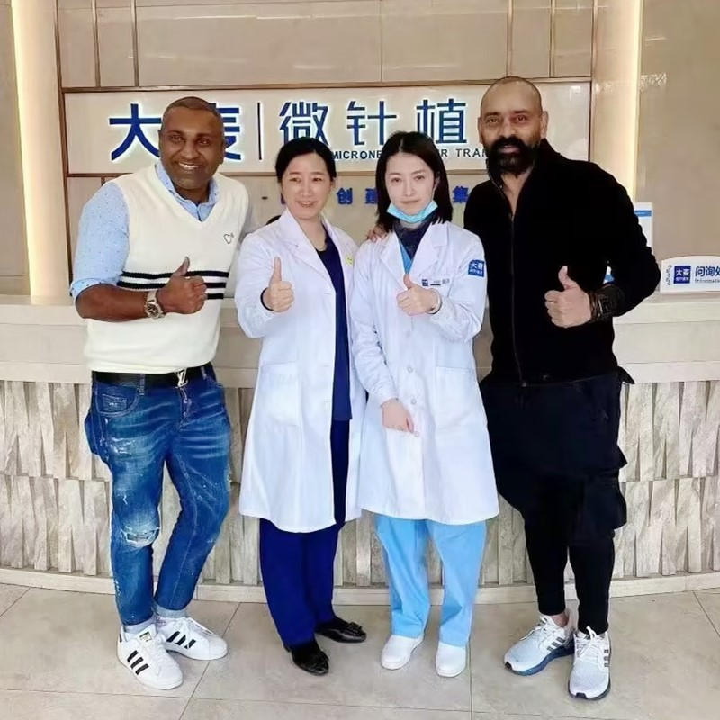
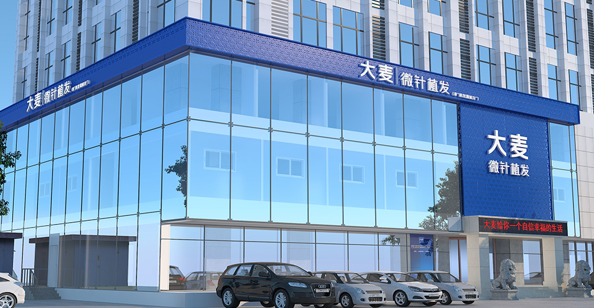

Premium Hair Restoration in Taizhou
Comprehensive solutions for all types of hair loss with advanced microneedle technology
Personalized hairline design for natural results that perfectly match your facial features, using advanced microneedle technology to restore a youthful appearance.
Learn MorePrecision microneedle implantation increases density while maintaining natural growth direction, achieving higher density implantation for thicker, fuller hair.
Learn MoreComprehensive restoration for all stages of crown baldness, using our patented microneedle technology to achieve natural coverage results.
Learn MoreNatural-looking eyebrow restoration with precision implantation designed to perfectly match your facial aesthetics, bringing fullness and dimension.
Learn MoreArtistic implantation creates the perfect beard or mustache, filling sparse areas to create a masculine look that perfectly complements your features.
Learn MorePrecision implantation to restore or enhance your sideburns, creating natural density and shape that perfectly frames your face.
Learn MoreMulti-site body hair transplantation with careful implantation ensuring natural growth direction and density for the most realistic appearance.
Learn MoreComprehensive hair loss treatment including medication therapy, PRP treatment, and scalp care programs to prevent further hair loss and promote healthy growth.
Learn MoreProfessional hair care including personalized scalp care, nutritional therapy, and maintenance programs to support long-term hair health.
Learn MoreReal results from our satisfied patients in Taizhou. See the transformation for yourself.


World-class facilities and patented microneedle technology in Taizhou
Barley Microneedle Hair Transplant Hospital in Taizhou is one of our flagship locations, featuring state-of-the-art facilities and a team of internationally trained surgeons. With over 20 years of experience and 14 national patents, our Taizhou branch has successfully completed thousands of hair restoration procedures. Our hospital combines traditional Chinese medical excellence with cutting-edge microneedle technology to deliver natural-looking, long-lasting results for patients from around the world.
Our patented microneedle implantation technology represents the pinnacle of hair restoration innovation. Unlike traditional FUE methods, our microneedle technique uses precision implanters that create minimal tissue damage, ensuring graft survival rates above 98%. This technology allows for higher density packing, natural hairline design, and faster recovery times. With 14 national patents, Barley leads the industry in hair transplant technology advancement.
Our surgeons with satisfied patients after successful hair transplant procedures in Taizhou

Patient with doctor after procedure

Happy patient with restored confidence

Patient pleased with beard restoration

Excellent results for female patient

Scar effectively concealed by our experts

Natural-looking eyebrow restoration

Complete crown coverage achieved

Maximum density results delivered
Hear from our satisfied international patients in Taizhou
"After years of over-plucking, I had basically no eyebrows left. The team at Barley designed a shape that perfectly frames my face. Now I wake up with natural-looking brows every morning. Life-changing."
"Female hair loss is something nobody talks about, and I felt embarrassed even seeking help. The doctors at Barley were understanding and non-judgmental. They designed a hairline that looks feminine and natural. I feel like myself again."
"I wanted fuller eyebrows without relying on makeup every day. The eyebrow transplant at Barley was quick and the healing was straightforward. The brows look so natural that my friends just think I have always had nice eyebrows."
"My hair was thinning badly around the temples and part line. The doctors recommended a targeted transplant and the results have been remarkable. The density looks natural and blends seamlessly with my existing hair."
"I had a scar through my left eyebrow from a childhood fall. Barley transplanted hair directly into the scar and now it is completely invisible. The eyebrow looks uniform and natural. I am so grateful."
"I was nervous as a woman considering a hair transplant, but the team put me at ease from the start. They understood exactly what I needed and the results are subtle and natural. Nobody at work has guessed I had anything done."
Tour our modern, world-class facility in Taizhou

Welcoming and comfortable environment

Confidential and professional consultations

Equipped with the latest medical technology

Relaxing environment for post-procedure care

Spacious and comfortable waiting area

State-of-the-art hair transplant technology
Join thousands of satisfied patients who have transformed their lives with Barley's advanced microneedle technology
Combine your hair transplant journey with sightseeing in Taizhou
Sacred Buddhist mountain with stunning waterfalls and ancient temples
Ancient wall in Linhai, a UNESCO heritage site from the Ming Dynasty
1,400-year-old Buddhist temple, birthplace of Tiantai Buddhism
Spectacular scenic area known as the 'Mountain of Famous Views'
Well-preserved ancient town with traditional architecture and local cuisine
Beautiful island with pristine beaches and fresh seafood
Essential information for patients traveling to Taizhou
Common questions from patients in Taizhou
Most procedures take 6-8 hours depending on the number of grafts needed. Our microneedle technology allows for efficient extraction and implantation, minimizing procedure time while ensuring high graft survival rates.
Most patients can return to normal activities within 3-5 days. The transplanted hair will shed within 2-4 weeks, with new growth starting around 3-4 months. Full results are visible after 12 months.
Costs typically range from 15,000 to 40,000 RMB depending on the number of grafts needed and the procedure type. We offer free consultations to provide accurate pricing for your specific case.
We use local anesthesia, so you'll feel minimal discomfort during the procedure. Most patients report only mild pressure sensations. Post-procedure discomfort is manageable with prescribed medication.
Most patients stay 1-2 nights for the procedure and initial follow-up. We recommend staying at least one night after the surgery for a check-up before traveling home.
Everyone's hair loss journey and solution are unique due to a variety of factors. Our hair restoration experts will assist you in determining the root cause and the best solution for your hair restoration plan. If you have any questions, please ask; we are happy to assist.
+86 18618396621


hanying@damaizf.com